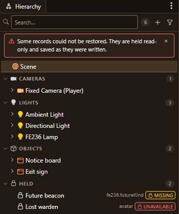
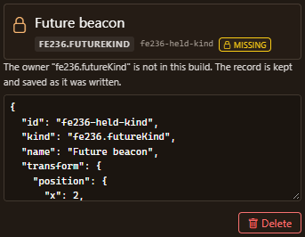
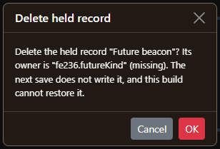

A real phone, and scene saving done
Last time the phone app had only ever run on an emulator, and scene saving had a few gaps left. This week the app went onto my own phone, the gaps are closed, and DD-ReForged is built as far as I can take it on my own.
On a real phone
My phone is a Galaxy Z Fold 7, so I got two screens to test on: the big inner one and the tall, narrow cover screen. I installed the app over Wi-Fi straight from my PC, then pointed it at Personal Forge on my home network.
The very first sign-in failed, and it was a good failure to find. To sign in, Forge gives the phone a short code and the address of a page to approve it on. Forge hadn't been told its own home-network address, so it handed the phone localhost, which on a phone means the phone itself. The app was right to refuse to open that, but then it gave up without showing the code, so I had no way to approve it from the PC either. Now, if the app can't safely open the approval page, it still shows the code and tells you to approve it on your PC. I also gave Forge its proper home-network address.
After that, everything I tried worked: the inbox, the repos, the branches, the boards and a card's discussion. Two more things turned up:
- Settings → Notifications had nothing on Forge's side to talk to. Forge now keeps notification preferences for each person, and the phone reads them from there.
- The cover screen. On the narrow screen, the "Edit server" button grew two rows tall whenever the connection test result appeared next to it. The result now sits on its own row under the buttons, the way the design always had it.
Forge's branch list also has a time limit now, so a slow repo can't leave the phone waiting forever.
The fixed build went onto the phone as an update, so I didn't have to sign in again. One mystery is still open: for about five minutes one afternoon, the phone couldn't reach my PC at all, then it recovered on its own. I've noted it and I'm keeping an eye out.
Scene saving, finished


In the last post, the engine learned to hold on to anything in a scene it can't load and save it back untouched. This week I finished the part you can see. When a scene has held items, the editor shows a banner and gives them their own Held group in the Hierarchy. Each one is marked as either missing (its plugin isn't in this build) or unavailable (its plugin is there but couldn't load it).


Selecting one shows exactly what was saved, read-only. You can delete it, but only after a confirm that spells out what you're losing.


None of this ever shows up for players; the markers only exist in the editor.
To prove it all works, I ran the full loop against a real backend and editor: open a scene with held items, save it, load a later save back from the database rather than the browser's copy, delete one with the confirm, and reload. All 20 checks passed.
That run turned up one more mismatch. The editor and the game disagreed about physics that had been switched off: in one case the editor still built a physics body the game wouldn't, and in another it was the other way round. They now agree. The editor's list of avatars and the server's catalogue also now always give the same entry for the same name.
With that, scene saving is done, and it's safe for a plugin to be switched off without taking anyone's work with it.
DD-ReForged: built as far as I can take it
I went through DD-ReForged again against everything I want it to do, and every piece I can build is built. What's left is on my side: a code-signing certificate so Windows stops warning about the installer, a real Linux desktop to check the tray on, and handing the team build to the people who'll use it.
Builds 0.3.9 and 0.3.10 went onto my PC in place, with backups first. Two smaller fixes made it in:
- If a save fails because of a database error partway through, DD-ReForged now says so plainly and logs it, instead of failing with a vague message.
- If you open Forge's approve-a-device page while you're signed out, signing in now brings you back to that page instead of dropping you on the home page.
Next
The engine, for real this time. Scenes are safe now, so the next step is either the plugin platform itself or the export targets for phone and Steam builds.